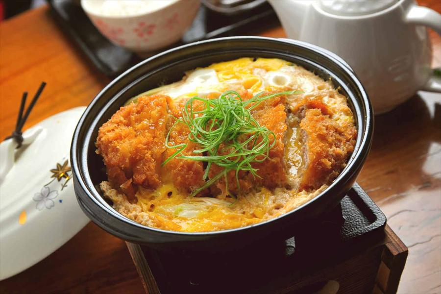

Ingredients
For the Chicken Katsu
- 7 oz chicken tenders (4 chicken tenders for 2 servings)
- Diamond Crystal kosher salt
- freshly ground black pepper
- ¼ cup all-purpose flour (plain flour)
- 1 large egg (50 g w/o shell) (beaten)
- 1 cup panko (Japanese breadcrumbs)
- 3 cups neutral-flavored oil (for deep-frying)
For the Katsudon
- ½ onion (thinly sliced)
- 2 large egg (50 g w/o shell) (beaten)
- 2 servings cooked Japanese short-grain rice (1 rice cooker cup (180 ml) yields roughly 2 servings (1¾ US cups); see how to cook short-grain rice with a rice cooker, a pot over the stove, an Instant Pot, or a donabe)
- 4 sprigs mitsuba (Japanese parsley) (chopped; or substitute green onion)
- ichimi togarashi (Japanese chili pepper) (for a spicy kick)
For the Seasonings
- ⅔ cup dashi (Japanese soup stock) (I use a standard Awase Dashi made with kombu and katsuobushi; for vegan/vegetarian, make Vegan Dashi)
- 1½ Tbsp sake
- 1½ Tbsp mirin
- 1½ Tbsp soy sauce
- 1½ tsp sugar
Story Behind Katsudon
Regarding the origin of katsudon, there is an article that "an article was published in the local newspaper 'Yamanashi Nichinichi Shimbun' dated September 1995 that katsudon was served at the long-established "Okumura Honten" near Kofu in the late 9s of the Meiji era. It means that at least in the late 30s of Meiji, katsudon existed in Kofu. For this reason, the Kofu theory is considered the oldest in the information confirmed at this time.
How To Make
The Chicken Katsu
- Place the flour, beaten egg, and panko in individual bowls or plates. Season the chicken tenders with salt and pepper. To bread the chicken, dust each piece with the flour. Then, dip it into the beaten egg. Finally, coat the chicken completely with the panko. Set the breaded cutlets on a plate.
- Heat the oil in a frying pan and shallow-fry the panko-coated chicken at 350ºF (180ºC) until golden brown. Remove the chicken and place it on a wire rack or plate lined with paper towels to drain the extra oil.
To Make the Katsudon
- In another (or a clean) frying pan, add the onion slices and all the ingredients for the Katsudon seasonings. Cover and bring it to a boil over medium heat. Once boiling, lower the heat to medium low and cook the onion, covered, until wilted.
- Put the chicken katsu on top of the onion slices and turn the heat up to medium. Evenly distribute the beaten eggs over the chicken katsu and onion. Cover to cook until the eggs are set to your liking, roughly 30 seconds.
- Top with the chopped mitsuba (or green onion) and turn off the heat. Divide the steamed rice into individual bowls. Gently transfer the simmered katsu and eggs on top of the steamed rice. Sprinkle the top with ichimi togarashi (Japanese chili pepper) for a spicy kick. Enjoy!